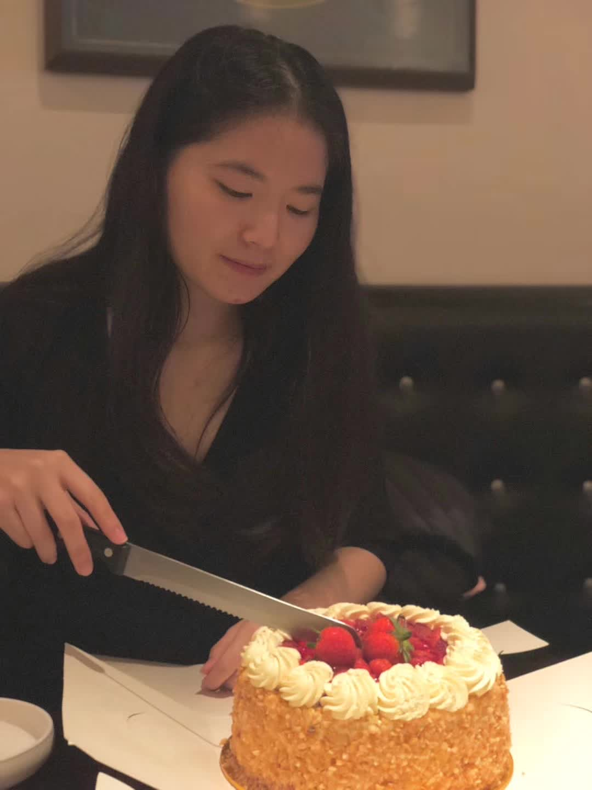
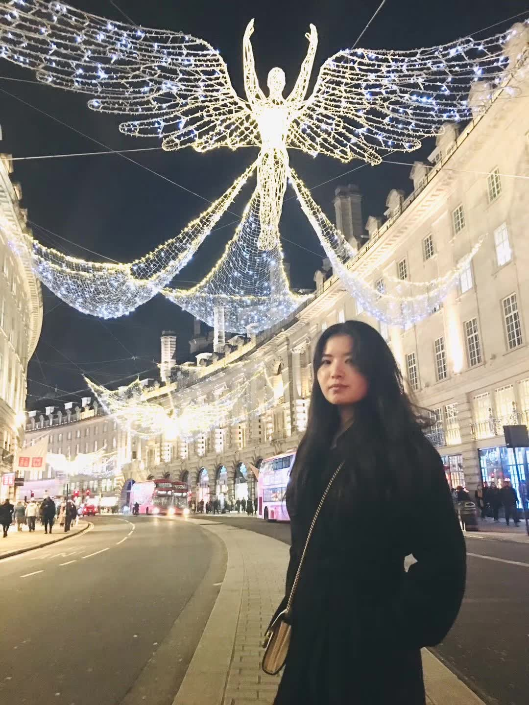

About Me.

Let's skip the boring self-intro and get start with some Q&A!
Q: If you could only eat one food for the rest of your life, what would it be?
A: Wagyu, the best quality one please, if I don't need to pay. But if I am the one who pay, then normal beef.
Q: If aliens landed on earth tomorrow and offered to take you home with them, would you go?
A: I volunteer!
Q: What’s the most scary moment you’ve ever experienced?
A: After Covid, I traveled to Sri Lanka and booked a villa way up in the mountains.
And it was supposed to be a awesome, luxurious spot.
But when we rolled in super late at night, the roads were like pitch black,
and we started getting major creepy vibes during the cab ride by the host's driver.
Finally, we arrive at what we thought was this swanky villa,
only to realize IT IS A PERSONAL HOUSE.
The hosts were actually really sweet.
they couldn’t have been happier to see us because they hadn’t had any guests during Covid.
So they welcomed us with hot tea and even cooked us dinner themselves,
which was nice but kinda unexpected.
With no way to leave except through the host's transport, because it's all dark and we are in the top of mountain.
We played it safe that night. NO showers. NO sleep. NO food. Just drink the water we’d brought.
It felt like we gonne get killed by the "quirky" hosts that night (I'm sorry, they are nice actually).
But come morning, everything changed.
The sun rising over those mountains was unreal.
Suddenly, the whole place looked stunning,
and we could finally relax and appreciate the view.
Despite the extremly beautiful view that we can never forget,
we decided to head out,
leaving behind a cool but kinda spooky memory of our mountain adventure in Sri Lanka.
Q: If you could only eat one dessert for the rest of your life, what would it be?
A: Kuih Talam Pandan. Terima kasih, Malaysia.
Q: What is the best piece of advice you have ever gotten?
A: NEVER ASSUME. I cannot tell how many times it saves me.
My Career.
National University of Singapore
Research Assistant in Statistics & Data Science Dept from December 2023 till December 2024
In collaboration with my supervisor Dr. Huang Dongming,
I engage in a detailed examination and interpretation of the papers
Catalytic prior distributions with application to generalized linear models
and Bayesian inference on Cox regression models using catalytic prior distributions
.
Subsequently, I undertake the task of implementing the paper's methodologies
into practical functions using R programming language. Throughout this process, my
primary focus lies on ensuring the clarity and user-friendliness of the implemented
methods, thus facilitating ease of use for future researchers interested in employing
the catalytic prior method.
Moreover, I actively contribute to a collective effort aimed at
refining and enhancing the functionality of the implemented methods.
This involves soliciting feedback and insights from potential users to gain a
comprehensive understanding of their requirements and preferences. By
incorporating these perspectives into our development process, we aim to
ensure that the enhancements align closely with the overarching objectives
of the project. Through iterative refinement and meticulous attention to
detail, we strive to optimize the usability and applicability of the
implemented methodologies, thereby advancing the state-of-the-art in Bayesian inference!
Oversea-Chinese Banking Corporation Limited
Data Engineer in Group Data Office from July 2022 till August 2023

I successfully spearheaded various projects at OCBC Malaysia, resulting in significant
improvements in efficiency and productivity. One notable achievement was the development of the OCBC
Malaysia ELI Trade Automation Smart Process Robot, which automated trade reconciliation for over 50
trade parameters. This innovative solution drastically reduced the processing time per trade from
over 40 minutes to less than 1 minute.
Additionally, I created and implemented original solutions
that automated the comparison processes for different products. By taking on the processing of
approximately 1500 trades daily, these solutions relieved my colleagues of their workload and
eliminated human oversight errors.
Furthermore, I played a key role in migrating our on-premises systems onto Jenkins, a
powerful automation tool. As part of this migration, I implemented the PyTest framework, enabling
automated testing of Python scripts. This framework ensured a minimum of 80% code coverage, enhancing the
reliability and stability of our systems.
In addition to these technical achievements, I also took on the responsibility of onboarding
numerous interns to our team. Through effective integration and seamless collaboration, I ensured
that the interns were able to contribute effectively to our projects, ultimately delivering
successful outcomes for the team.
Singapore Telecommunications Limited
Data Scientist in Perdiction Analysis from January 2022 to June 2022

In Singtel, I experienced a balanced work-life environment that values diverse backgrounds. I was
working on cutting-edge projects, utilizing advanced analytics techniques to extract insights from
large datasets. Meanwhile I got change to collaborate with experienced professionals on real-world
projects. Singtel promotes work-life integration through flexible hours, and recreational
activities, ensuring a healthy balance.
And During the COVID-19 pandemic, as customers started canceling or downgrading their
network
subscriptions, I recognized the need to understand the evolving target customer base. Using PySpark,
I analyzed over 100,000 customers and more than 20 features, gaining valuable insights into their
changing behavior.
By employing advanced analytics techniques, I assisted the management team in
implementing a new product structure. The clusters and labels generated through this analysis
identified the main target customers, enabling informed decisions on product offerings and marketing
strategies.
Additionally, I conducted in-depth analysis of customer shakedown behavior, providing
crucial insights to higher management. This proactive approach helped the organization adapt and
align its products with the new target customer base, mitigating the impact of changing customer
behavior and ensuring continued growth and success.
Nanyang Technological University
MSc Financial Technology

During my pursuit of a Master's degree in Financial Technology (FinTech) at NTU, I had the
opportunity to work on a series of impactful projects. One notable project involved equity price
analytics, where I developed a Pairs Trading strategy by programming buy and sell signals using
Simple and Exponential Moving Averages. I also updated coding structures to generate long-short
pairs of equities, enhancing my skills in data analysis and algorithmic trading.
In another project focused on Natural Language Processing (NLP), I tackled the issue of
online harassment by developing a model for toxic comment classification. By remodelling machine
learning methods, such as LSTM, I achieved better efficiency and accuracy compared to simpler models
like Logistic Regression. This project showcased my ability to apply advanced NLP techniques and
contribute to creating a safer online environment.
Furthermore, I ventured into the realm of blockchain technology by designing a smart
contract using Solidity for car rental companies. This project aimed to streamline daily operations
and facilitate secure transactions within the industry, highlighting my capacity to integrate
innovative solutions into traditional sectors.
Lastly, I explored human facial expression recognition by engineering models using PyTorch
and SKLearn. With a focus on deep learning techniques, I achieved a commendable accuracy of 76% in
identifying different facial expressions. This project demonstrated my proficiency in leveraging
state-of-the-art technologies to tackle complex challenges.
Through these projects, I not only acquired technical expertise but also honed my analytical
and problem-solving skills. The experiences gained during my time at NTU have equipped me with a
strong foundation in FinTech and have prepared me to make valuable contributions in this dynamic
field.
University College London
BSc Mathematics with Economics

Throughout their rigorous academic journey, this individual demonstrated unwavering dedication,
perseverance, and a thirst for knowledge. They immersed themselves in a challenging curriculum,
tackling complex mathematical concepts while also exploring the fascinating intersection of
economics. Their commitment to excellence propelled them to achieve Upper Second Honours, a
testament to their intellectual prowess and diligent work ethic.
However, this individual's journey extended far beyond the confines of the classroom. Driven
by a deep sense of compassion and a desire to make a positive impact, they actively sought
opportunities to uplift and empower others. Recognizing the disparity in access to educational
resources, they took it upon themselves to prepare coding lectures and programs specifically
tailored for less-privileged children.
With great enthusiasm, they taught Python lessons to these young learners, igniting their
curiosity and fostering a love for programming. Through interactive activities like "Guess the
Number," they not only nurtured technical skills but also instilled confidence and encouraged
teamwork. By bridging the digital divide and empowering these children, this individual became a
catalyst for change, opening doors to opportunities that were once out of reach.
Their tireless dedication to education and community outreach is a testament to their strong
sense of social responsibility. By investing their time, knowledge, and compassion, they empowered
future generations with the tools to thrive in an increasingly digital world. Their impact reached
far beyond academic achievements, leaving a lasting legacy of inspiration, resilience, and
compassion.
My Life.
Cooking and Baking
Then, I moved to Singapore, got the opportunity to join the NTUC Bread Making (Basic Bread) course, and I must say it was an incredible experience. The course details, available on this website https://www.ntuclearninghub.com/en-gb/-/course/bread-making-basic-bread.
Cooking and baking also became a way to nourish myself, as I discovered the joy of creating wholesome and delicious foods tailored to my own preferences. Through this experience, I developed a lifelong passion for cooking and a sense of pride in my ability to create delicious delights.
Japanese Culture

I have always been captivated by Japanese culture, and my love for it began in primary school when I
started watching Japanese anime.
One of the first anime series I watched was Natsume's Book of Friends (夏目友人帳), which
introduced me to the enchanting world of Japanese storytelling. However, my all-time favorite anime
has to be Fullmetal Alchemist (鋼の錬金術師). The intricate plot, compelling characters, and
thought-provoking themes resonated deeply with me.
I am captivated by the world of vocaloid music and the enchanting character of Hatsune
Miku. Miku's digital persona and her distinctive voice have become iconic in the realm of Japanese
pop culture.
Inspired by my passion for Janese culture, I took it upon myself to learn Japanese, starting
with
self-study aided by YouTube. I dedicated my efforts to mastering the Japanese language and achieved
a commendable result by attaining the N2 level proficiency.
Although I am proud of this accomplishment, I acknowledge that there is still room for
improvement, and I remain committed to further refining my Japanese skills in the future.
Concerts
As I previously mentioned, my love for Japanese culture extends beyond anime and language. I am an
avid attendee of concerts, particularly those featuring Japanese artists.
Among my most memorable experiences are attending concerts by virtual singer Hatsune Miku
, rock band One Ok Rock and Radwimps. The energy, passion, and creativity that these performances exude are
truly captivating.
In addition to Japanese artists, I have also had the privilege of attending concerts by
renowned Hong Kong singer Eason Chen and Miriam Yeung Chin-wah. Their soulful voice and heartfelt performances have left a
lasting impression on me. These concerts have not only allowed me to indulge in my passion for music
but have also provided a platform to connect with like-minded fans and immerse myself in the vibrant
atmosphere of live performances.
Training My body!
During my first year abroad, which coincided with my time at UCL, I unfortunately developed a mild
eating disorder that had a detrimental impact on both my mental and physical well-being.
It was an incredibly difficult period as I found myself gaining excessive weight, prompting
my doctor to recommend weight loss. However, I soon realized that traditional workouts felt like
torture to me. Despite this challenge, I persevered and embarked on a journey to find a balance
between nourishing my body and maintaining good health.
Over time, I underwent significant changes in my mindset and began to appreciate and respect
my body instead of harboring feelings of self-hatred. I discovered a newfound love for weight
training, complemented by gentle cardio activities like swimming.
Even while traveling, I found solace in working out as it helped alleviate fatigue and kept
me energized.
Rusty Lake Game
I have developed a deep fondness for playing the Rusty Lake series and have found myself revisiting
each game numerous times.
The intricate and immersive nature of the series has captivated me, compelling me to delve
into the complex storylines with great enthusiasm. The depth of the narrative has motivated me to go
the extra mile by writing detailed explanations for each scene, piecing together the intricate
puzzle that Rusty Lake presents.
Each playthrough brings new discoveries and hidden layers to unravel, making each experience
feel fresh and engaging. The combination of challenging puzzles, atmospheric visuals, and
thought-provoking storytelling has solidified Rusty Lake as one of my favorite gaming series,
allowing me to fully immerse myself in its mysterious and captivating world.
Travelling
Throughout my life, I have been fortunate to embark on various travel adventures to breathtaking destinations.
During my younger years, I had the opportunity to visit Maldives and Thailand, where I was enchanted by the pristine beaches and vibrant cultures.
As a student at UCL in the UK, I often indulged in spontaneous solo trips, purchasing random train tickets to explore different corners of the country.
Singapore became a hub for memorable group travels with my friends, including visits to captivating places such as Cambodia, Indonesia, UAE, and Sri Lanka.
Among them, Sri Lanka holds a special place in my heart. Despite its reputation for danger, I found it to be a haven of unparalleled beauty. The tranquil sea provided a healing experience, while the enchanting tea factories offered a soothing ambiance. The people, predominantly Buddhist, exuded kindness and generosity, leaving an indelible mark on my memery.